<svg
  version="1.1"
  baseProfile="full"
  width="300"
  height="200"
  xmlns="http://www.w3.org/2000/svg"
>
  <rect width="100%" height="100%" fill="red" />

  <rect x="0" y="0" width="100" height="100" fill="blue" />

  <circle cx="150" cy="100" r="80" fill="green" />

  <text x="150" y="125" font-size="60" text-anchor="middle" fill="white">
    SVG
  </text>
</svg>


<svg width="200" height="200" viewBox="0 0 100 100">
    <rect width="100%" height="100%" fill="red" />
</svg>


<?xml version="1.0" standalone="no"?>
<svg width="200" height="250" version="1.1" xmlns="http://www.w3.org/2000/svg">

  <rect x="10" y="10" width="30" height="30" stroke="black" fill="transparent" stroke-width="5"/>
  <rect x="60" y="10" rx="10" ry="10" width="30" height="30" stroke="black" fill="transparent" stroke-width="5"/>

  <circle cx="25" cy="75" r="20" stroke="red" fill="transparent" stroke-width="5"/>
  <ellipse cx="75" cy="75" rx="20" ry="5" stroke="red" fill="transparent" stroke-width="5"/>

  <line x1="10" x2="50" y1="110" y2="150" stroke="orange" stroke-width="5"/>
  <polyline points="60 110, 65 120, 70 115, 75 130, 80 125, 85 140, 90 135, 95 150, 100 145"
      stroke="orange" fill="transparent" stroke-width="5"/>

  <polygon points="50 160, 55 180, 70 180, 60 190, 65 205, 50 195, 35 205, 40 190, 30 180, 45 180"
      stroke="green" fill="transparent" stroke-width="5"/>

  <path d="M20,230 Q40,205 50,230 T90,230" fill="none" stroke="blue" stroke-width="5"/>
</svg>

<!-- Path -->
<svg width="200" height="200" xmlns="http://www.w3.org/2000/svg">
    <path d="M10 10"/>
    <!-- Points -->
    <circle cx="10" cy="10" r="2" fill="red"/>
</svg>


<svg width="100" height="100" xmlns="http://www.w3.org/2000/svg">

    <path d="M 10 10 H 90 V 90 H 10 L 10 10"/>

    <!-- Points -->
    <circle cx="10" cy="10" r="2" fill="red"/>
    <circle cx="90" cy="90" r="2" fill="red"/>
    <circle cx="90" cy="10" r="2" fill="red"/>
    <circle cx="10" cy="90" r="2" fill="red"/>
</svg>

<svg width="100" height="100" xmlns="http://www.w3.org/2000/svg">

    <path d="M 10 10 H 90 V 90 H 10 Z" fill="transparent" stroke="black"/>

    <!-- Points -->
    <circle cx="10" cy="10" r="2" fill="red"/>
    <circle cx="90" cy="90" r="2" fill="red"/>
    <circle cx="90" cy="10" r="2" fill="red"/>
    <circle cx="10" cy="90" r="2" fill="red"/>
</svg>

<svg width="100" height="100" xmlns="http://www.w3.org/2000/svg">

    <path d="M 10 10 h 80 v 80 h -80 Z" fill="transparent" stroke="black"/>

    <!-- Points -->
    <circle cx="10" cy="10" r="2" fill="red"/>
    <circle cx="90" cy="90" r="2" fill="red"/>
    <circle cx="90" cy="10" r="2" fill="red"/>
    <circle cx="10" cy="90" r="2" fill="red"/>
</svg>

<svg width="190" height="160" xmlns="http://www.w3.org/2000/svg">

    <path d="M 10 10 C 20 20, 40 20, 50 10" stroke="black" fill="transparent"/>
    <circle cx="10" cy="10" r="2" fill="red"/>
    <circle cx="50" cy="10" r="2" fill="red"/>

    <path d="M 70 10 C 70 20, 110 20, 110 10" stroke="black" fill="transparent"/>
    <circle cx="70" cy="10" r="2" fill="red"/>
    <circle cx="110" cy="10" r="2" fill="red"/>

    <path d="M 130 10 C 120 20, 180 20, 170 10" stroke="black" fill="transparent"/>
    <circle cx="130" cy="10" r="2" fill="red"/>
    <circle cx="170" cy="10" r="2" fill="red"/>

    <path d="M 10 60 C 20 80, 40 80, 50 60" stroke="black" fill="transparent"/>
    <circle cx="10" cy="60" r="2" fill="red"/>
    <circle cx="50" cy="60" r="2" fill="red"/>

    <path d="M 70 60 C 70 80, 110 80, 110 60" stroke="black" fill="transparent"/>
    <circle cx="70" cy="60" r="2" fill="red"/>
    <circle cx="110" cy="60" r="2" fill="red"/>

    <path d="M 130 60 C 120 80, 180 80, 170 60" stroke="black" fill="transparent"/>
    <circle cx="130" cy="60" r="2" fill="red"/>
    <circle cx="170" cy="60" r="2" fill="red"/>

    <path d="M 10 110 C 20 140, 40 140, 50 110" stroke="black" fill="transparent"/>
    <circle cx="10" cy="110" r="2" fill="red"/>
    <circle cx="50" cy="110" r="2" fill="red"/>

    <path d="M 70 110 C 70 140, 110 140, 110 110" stroke="black" fill="transparent"/>
    <circle cx="70" cy="110" r="2" fill="red"/>
    <circle cx="110" cy="110" r="2" fill="red"/>

    <path d="M 130 110 C 120 140, 180 140, 170 110" stroke="black" fill="transparent"/>
    <circle cx="130" cy="110" r="2" fill="red"/>
    <circle cx="170" cy="110" r="2" fill="red"/>
  
</svg>


<svg width="190" height="160" xmlns="http://www.w3.org/2000/svg">
<path d="M 10 80 C 40 10, 65 10, 95 80 S 150 150, 180 80" stroke="black" fill="transparent"/>

<path d="M 10 80 L 40 10" stroke="red" fill="transparent"/>
<path d="M 95 80 L 65 10" stroke="red" fill="transparent"/>

<path d="M 95 80 L 125 150" stroke="red" fill="transparent"/>
<path d="M 150 150 L 180 80" stroke="red" fill="transparent"/>

</svg>

<svg width="190" height="160" xmlns="http://www.w3.org/2000/svg">
    <path d="M 10 80 Q 95 10 180 80" stroke="black" fill="transparent"/>

    <path d="M 95 10 L 10 80" stroke="red" fill="transparent"/>
    <path d="M 95 10 L 180 80" stroke="red" fill="transparent"/>

</svg>
  
<svg width="190" height="160" xmlns="http://www.w3.org/2000/svg">
    <path d="M 10 80 Q 52.5 10, 95 80 T 180 80" stroke="black" fill="transparent"/>

    <path d="M 52.5 10 L 10 80" stroke="red" fill="transparent"/>
    <path d="M 52.5 10 L 95 80" stroke="red" fill="transparent"/>

    <path d="M 137.5 150 L 95 80" stroke="red" fill="transparent"/>
    <path d="M 137.5 150 L 180 80" stroke="red" fill="transparent"/>

</svg>

<!--A rx ry x-axis-rotation large-arc-flag sweep-flag x y -->
<svg width="320" height="320" xmlns="http://www.w3.org/2000/svg">
    <path d="M 10 315
             L 110 215
             A 30 50 0 0 1 162.55 162.45
             M 110 215
             L 172.55 152.45
             A 30 50 -45 0 1 215.1 109.9
             M 172.55 152.45
             L 215.1 109.9
             L 315 10" stroke="black" fill="green" stroke-width="2" fill-opacity="0.5"/>

    <circle cx="10" cy="315" r="2" fill="red"/>
    <circle cx="110" cy="215" r="2" fill="red"/>
    <circle cx="162.55" cy="162.55" r="2" fill="red"/>
    <circle cx="172.55" cy="152.45" r="2" fill="red"/>
    <circle cx="215.1" cy="109.9" r="2" fill="red"/>
    <circle cx="315" cy="10" r="2" fill="red"/>

    <path d="M 110 215
             A 30 50 0 0 0 162.55 162.45
             M 172.55 152.45
             A 30 50 -45 0 0 215.1 109.9" stroke="black" fill="green" stroke-width="2" fill-opacity="0.5"/>
</svg>

<svg xmlns="http://www.w3.org/2000/svg" width="320" height="320">
    <path d="M 10 315
             L 110 215
             A 36 60 0 0 1 150.71 170.29
             L 172.55 152.45
             A 30 50 -45 0 1 215.1 109.9
             L 315 10" stroke="black" fill="green" stroke-width="2" fill-opacity="0.5"/>

    <circle cx="150.71" cy="170.29" r="2" fill="red"/>
    <circle cx="110" cy="215" r="2" fill="red"/>

    <ellipse cx="144.931" cy="229.512" rx="36" ry="60" fill="transparent" stroke="blue"/>
    <ellipse cx="115.779" cy="155.778" rx="36" ry="60" fill="transparent" stroke="blue"/>
</svg>


<svg width="325" height="325" xmlns="http://www.w3.org/2000/svg">
    <path d="M 80 80
             A 45 45, 0, 0, 0, 125 125
             L 125 80 Z" fill="green"/>
    <path d="M 230 80
             A 45 45, 0, 1, 0, 275 125
             L 275 80 Z" fill="red"/>

    <circle cx="230" cy="80" r="2" fill="red"/>
    <circle cx="275" cy="125" r="2" fill="red"/>
    <circle cx="275" cy="80" r="2" fill="red"/>

    <path d="M 80 230
             A 45 45, 0, 0, 1, 125 275
             L 125 230 Z" fill="purple"/>
    <path d="M 230 230
             A 45 45, 0, 1, 1, 275 275
             L 275 230 Z" fill="blue"/>
</svg>

<!-- 填充和边框-->
<svg width="325" height="325" xmlns="http://www.w3.org/2000/svg">
    <rect x="10" y="10" width="100" height="100" stroke="blue" fill="purple" fill-opacity="0.5" stroke-opacity="0.8"/>

</svg>


<svg width="160" height="140" xmlns="http://www.w3.org/2000/svg" version="1.1">
    <line x1="40" x2="120" y1="20" y2="20" stroke="blue" stroke-width="10" stroke-linecap="butt"/>
    <circle cx="40" cy="20" r="2" fill="red"/>"
    <circle cx="120" cy="20" r="2" fill="red"/>"

    <line x1="40" x2="120" y1="60" y2="60" stroke="black" stroke-width="20" stroke-linecap="square"/>
    <circle cx="40" cy="60" r="2" fill="red"/>"
    <circle cx="120" cy="60" r="2" fill="red"/>"

    <line x1="40" x2="120" y1="100" y2="100" stroke="black" stroke-width="20" stroke-linecap="round"/>
    <circle cx="40" cy="100" r="2" fill="red"/>"
    <circle cx="120" cy="100" r="2" fill="red"/>"

</svg>


<?xml version="1.0" standalone="no"?>
<svg width="160" height="280" xmlns="http://www.w3.org/2000/svg" version="1.1">
    <polyline points="40 60 80 20 120 60" stroke="black" stroke-width="20"
        stroke-linecap="butt" fill="none" stroke-linejoin="miter"/>
    <circle cx="40" cy="60" r="2" fill="red"/>"
    <circle cx="80" cy="20" r="2" fill="red"/>"
    <circle cx="120" cy="60" r="2" fill="red"/>"


    <polyline points="40 140 80 100 120 140" stroke="black" stroke-width="20"
        stroke-linecap="square" fill="none" stroke-linejoin="bevel"/>
    <circle cx="40" cy="140" r="2" fill="red"/>"
    <circle cx="80" cy="100" r="2" fill="red"/>"
    <circle cx="120" cy="140" r="2" fill="red"/>"

    <polyline points="40 220 80 180 120 220" stroke="black" stroke-width="20"
    stroke-linecap="round" fill="none" stroke-linejoin="round"/>
    <circle cx="40" cy="220" r="2" fill="red"/>"
    <circle cx="80" cy="180" r="2" fill="red"/>"
    <circle cx="120" cy="220" r="2" fill="red"/>"

</svg>

<?xml version="1.0" standalone="no"?>
<svg width="200" height="150" xmlns="http://www.w3.org/2000/svg" version="1.1">
  <path d="M 10 75 Q 50 10 100 75 T 190 75" stroke="black"
    stroke-linecap="round" stroke-dasharray="5,10,5" fill="none"/>
  <path d="M 10 75 L 190 75" stroke="red"
    stroke-linecap="round" stroke-width="1" stroke-dasharray="5,5" fill="none"/>
</svg>

<?xml version="1.0" standalone="no"?>
<svg width="200" height="200" xmlns="http://www.w3.org/2000/svg" version="1.1">
  <defs>
    <style><![CDATA[
       #MyRect {
         stroke: black;
         fill: red;
       }
       #MyRect:hover {
        stroke: black;
        fill: blue;
        }
    ]]></style>
  </defs>
  <rect x="10" height="180" y="10" width="180" id="MyRect"/>
</svg>

<!--渐变 gradient -->
<svg width="120" height="240" version="1.1" xmlns="http://www.w3.org/2000/svg">
    <defs>
      <linearGradient id="Gradient1">
        <stop class="stop1" offset="0%" />
        <stop class="stop2" offset="50%" />
        <stop class="stop3" offset="100%" />
      </linearGradient>
      <linearGradient id="Gradient2" x1="0" x2="0" y1="0" y2="1">
        <stop offset="0%" stop-color="red" />
        <stop offset="50%" stop-color="black" stop-opacity="0" />
        <stop offset="100%" stop-color="blue" />
      </linearGradient>
      <style type="text/css">
        <![CDATA[
                #rect1 { fill: url(#Gradient1); }
                .stop1 { stop-color: red; }
                .stop2 { stop-color: black; stop-opacity: 0; }
                .stop3 { stop-color: blue; }
              ]]>
      </style>
    </defs>
  
    <rect id="rect1" x="10" y="10" rx="15" ry="15" width="100" height="100" />
    <rect
      x="10"
      y="120"
      rx="15"
      ry="15"
      width="100"
      height="100"
      fill="url(#Gradient2)" />
  </svg>
  

<?xml version="1.0" standalone="no"?>
<svg width="120" height="240" version="1.1" xmlns="http://www.w3.org/2000/svg">
    <defs>
        <radialGradient id="RadialGradient1">
            <stop offset="0%" stop-color="red" />
            <stop offset="100%" stop-color="blue" />
        </radialGradient>
        <radialGradient id="RadialGradient2" cx="0.25" cy="0.25" r="0.25">
            <stop offset="0%" stop-color="red" />
            <stop offset="100%" stop-color="blue" />
        </radialGradient>
    </defs>
  
    <rect
      x="10"
      y="10"
      rx="15"
      ry="15"
      width="100"
      height="100"
      fill="url(#RadialGradient1)" />
    <rect
      x="10"
      y="120"
      rx="15"
      ry="15"
      width="100"
      height="100"
      fill="url(#RadialGradient2)" />
</svg>

<?xml version="1.0" standalone="no"?>

<svg width="120" height="120" version="1.1" xmlns="http://www.w3.org/2000/svg">
  <defs>
    <radialGradient id="Gradient" cx="0.5" cy="0.5" r="0.5" fx="0.25" fy="0.25">
      <stop offset="0%" stop-color="red" />
      <stop offset="100%" stop-color="blue" />
    </radialGradient>
  </defs>

  <rect
    x="10"
    y="10"
    rx="15"
    ry="15"
    width="100"
    height="100"
    fill="url(#Gradient)"
    stroke="black"
    stroke-width="2" />

  <circle
    cx="60"
    cy="60"
    r="50"
    fill="transparent"
    stroke="white"
    stroke-width="2" />
  <circle cx="35" cy="35" r="2" fill="white" stroke="white" />
  <circle cx="60" cy="60" r="2" fill="white" stroke="white" />
  <text x="38" y="40" fill="white" font-family="sans-serif" font-size="10pt">
    (fx,fy)
  </text>
  <text x="63" y="63" fill="white" font-family="sans-serif" font-size="10pt">
    (cx,cy)
  </text>
</svg>


<?xml version="1.0" standalone="no"?>

<svg width="220" height="220" version="1.1" xmlns="http://www.w3.org/2000/svg">
  <defs>
    <radialGradient
      id="GradientPad"
      cx="0.5"
      cy="0.5"
      r="0.4"
      fx="0.75"
      fy="0.75"
      spreadMethod="pad">
      <stop offset="0%" stop-color="red" />
      <stop offset="100%" stop-color="blue" />
    </radialGradient>
    <radialGradient
      id="GradientRepeat"
      cx="0.5"
      cy="0.5"
      r="0.4"
      fx="0.75"
      fy="0.75"
      spreadMethod="repeat">
      <stop offset="0%" stop-color="red" />
      <stop offset="100%" stop-color="blue" />
    </radialGradient>
    <radialGradient
      id="GradientReflect"
      cx="0.5"
      cy="0.5"
      r="0.4"
      fx="0.75"
      fy="0.75"
      spreadMethod="reflect">
      <stop offset="0%" stop-color="red" />
      <stop offset="100%" stop-color="blue" />
    </radialGradient>
  </defs>

  <rect
    x="10"
    y="10"
    rx="15"
    ry="15"
    width="100"
    height="100"
    fill="url(#GradientPad)" />
  <rect
    x="10"
    y="120"
    rx="15"
    ry="15"
    width="100"
    height="100"
    fill="url(#GradientRepeat)" />
  <rect
    x="120"
    y="120"
    rx="15"
    ry="15"
    width="100"
    height="100"
    fill="url(#GradientReflect)" />

  <text x="15" y="30" fill="white" font-family="sans-serif" font-size="12pt">
    Pad
  </text>
  <text x="15" y="140" fill="white" font-family="sans-serif" font-size="12pt">
    Repeat
  </text>
  <text x="125" y="140" fill="white" font-family="sans-serif" font-size="12pt">
    Reflect
  </text>
</svg>

<!--text-->
<svg width="300" height="300" version="1.1" xmlns="http://www.w3.org/2000/svg">
    <rect x="0" y="0" width="100%" height="100%" fill="white" stroke="black" />"
    <text x="10" y="10"  text-anchor="start" fill="green">Hello World! 1</text>
    <text x="10" y="30"  text-anchor="middle" fill="red">Hello World! 2</text>
    <text x="10" y="50"  text-anchor="end" fill="purple">Hello World! 3</text>
    <text x="10" y="70"  text-anchor="inherit" fill="black">Hello World! 4</text>

    <text x="10" y="90">
        <tspan font-weight="bold" fill="red">This is bold and red</tspan>
    </text>

</svg>

<svg width="300" height="300" version="1.1" xmlns="http://www.w3.org/2000/svg">


    <path id="my_path" d="M 20,20 C 40,40 80,40 100,20" fill="transparent" />
    <text>
    <textPath xmlns:xlink="http://www.w3.org/1999/xlink" xlink:href="#my_path">
        This text follows a curve.
    </textPath>
    </text>

</svg>

<svg width="80" height="80" version="1.1" xmlns="http://www.w3.org/2000/svg">
    <g fill="red">
        <rect x="0" y="0" width="10" height="10" />
        <rect x="20" y="0" width="10" height="10" />
        <rect x="0" y="0" width="10" height="10" transform="translate(40,0)" />
    </g>

    <rect x="20" y="20" width="20" height="20" transform="rotate(45)" />
</svg>

<svg width="120" height="120" version="1.1" xmlns="http://www.w3.org/2000/svg">
    <rect width="100%" height="100%" stroke="green" fill="white" />
    <g transform="scale(0.5)">
        <rect width="50" height="50" stroke="blue" fill="red"/>
    </g>

</svg>

<!--剪切-->
<svg
  version="1.1"
  xmlns="http://www.w3.org/2000/svg"
  xmlns:xlink="http://www.w3.org/1999/xlink">
  <defs>
    <clipPath id="cut-off-bottom">
      <rect x="0" y="0" width="200" height="100" stroke="red" fill="blue"/>
    </clipPath>
  </defs>

  <circle cx="100" cy="100" r="100" clip-path="url(#cut-off-bottom)" />
</svg>

<!--遮罩-->
<svg width="200" height="200" version="1.1" xmlns="http://www.w3.org/2000/svg" xmlns:xlink="http://www.w3.org/1999/xlink">
  <defs>
    <linearGradient id="Gradient">
      <stop offset="0" stop-color="white" stop-opacity="0" />
      <stop offset="1" stop-color="white" stop-opacity="1" />
    </linearGradient>
    <mask id="Mask">
      <rect x="0" y="0" width="200" height="200" fill="url(#Gradient)" />
    </mask>
  </defs>

  <rect x="0" y="0" width="200" height="200" fill="green" />
  <rect x="0" y="0" width="200" height="200" fill="red" mask="url(#Mask)" />
</svg>

<!--一个圆 进行描边，边外宽20 形成圆直径+20的圆， 和圆直径-20的圆 因为透明度0.5 以前的圆又显示出来 所以是3个圆-->
<svg
  width="200"
  height="200"
  version="1.1"
  xmlns="http://www.w3.org/2000/svg"
  xmlns:xlink="http://www.w3.org/1999/xlink">
  <rect x="0" y="0" width="200" height="200" fill="blue" />
  <circle
    cx="100"
    cy="100"
    r="50"
    stroke="orange"
    stroke-width="40"
    stroke-opacity=".5"
    fill="red" />
</svg>

<!--嵌入光栅图像-->
<svg
  version="1.1"
  xmlns="http://www.w3.org/2000/svg"
  xmlns:xlink="http://www.w3.org/1999/xlink"
  width="200"
  height="200">
  <image
    x="90"
    y="-65"
    width="128"
    height="146"
    transform="rotate(45)"
    xlink:href="https://developer.mozilla.org/zh-CN/docs/Web/SVG/Element/image/mdn_logo_only_color.png" />
</svg>


<!--滤镜效果-->
<svg
  width="250"
  viewBox="0 0 200 85"
  xmlns="http://www.w3.org/2000/svg"
  version="1.1">
  <defs>
    <!-- Filter declaration -->
    <filter
      id="MyFilter"
      filterUnits="userSpaceOnUse"
      x="0"
      y="0"
      width="200"
      height="120">
      <!-- offsetBlur -->
      <feGaussianBlur in="SourceAlpha" stdDeviation="4" result="blur" />
      <feOffset in="blur" dx="4" dy="4" result="offsetBlur" />

      <!-- litPaint -->
      <feSpecularLighting
        in="blur"
        surfaceScale="5"
        specularConstant=".75"
        specularExponent="20"
        lighting-color="#bbbbbb"
        result="specOut">
        <fePointLight x="-5000" y="-10000" z="20000" />
      </feSpecularLighting>
      <feComposite
        in="specOut"
        in2="SourceAlpha"
        operator="in"
        result="specOut" />
      <feComposite
        in="SourceGraphic"
        in2="specOut"
        operator="arithmetic"
        k1="0"
        k2="1"
        k3="1"
        k4="0"
        result="litPaint" />

      <!-- merge offsetBlur + litPaint -->
      <feMerge>
        <feMergeNode in="offsetBlur" />
        <feMergeNode in="litPaint" />
      </feMerge>
    </filter>
  </defs>

  <!-- Graphic elements -->
  <g filter="url(#MyFilter)">
    <path
      fill="none"
      stroke="#D90000"
      stroke-width="10"
      d="M50,66 c-50,0 -50,-60 0,-60 h100 c50,0 50,60 0,60z" />
    <path
      fill="#D90000"
      d="M60,56 c-30,0 -30,-40 0,-40 h80 c30,0 30,40 0,40z" />
    <g fill="#FFFFFF" stroke="black" font-size="45" font-family="Verdana">
      <text x="52" y="52">SVG</text>
    </g>
  </g>
</svg>


<!--字体-->
<svg width="200" height="100">
    <font>
        <font-face
        font-family="Super Sans"
        font-weight="bold"
        font-style="normal"
        units-per-em="1000"
        cap-height="600"
        x-height="400"
        ascent="700"
        descent="300"
        alphabetic="0"
        mathematical="350"
        ideographic="400"
        hanging="500">
        <font-face-src>
        <font-face-name name="Super Sans Bold" />
      </font-face-src>
    </font-face>
    <missing-glyph><path d="M0,0h200v200h-200z" /></missing-glyph>
    <!-- Outline of exclamation point glyph -->
    <glyph unicode="!" horiz-adv-x="300"></glyph>
    <glyph unicode="@"><!-- Outline of @ glyph --></glyph>
        <!-- and so on -->
      </font>
      <rect width="100%" height="100%" stroke="green" fill="white" />
      <text x="10" y="50" font-family="Super Sans">My text uses Super Sans</text>
</svg>

<svg width="200" height="100">
    <font>
        <font-face font-family="Super Sans">
            <font-face-src>
            <font-face-uri xlink:href="fonts.svg#Super_Sans" />
            </font-face-src>
        </font-face>
        </font>
    <rect width="100%" height="100%" stroke="green" fill="white" />
    <text x="10" y="50" font-family="Super Sans">My text uses Super Sans</text>
</svg>




<iframe src="flower.svg" width="650" height="600" border="0" />

<object src="flower.svg" width="800" height="800" type="image/svg+xml" ></object>
